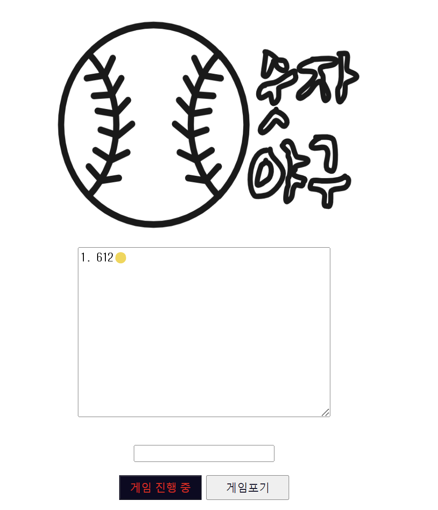
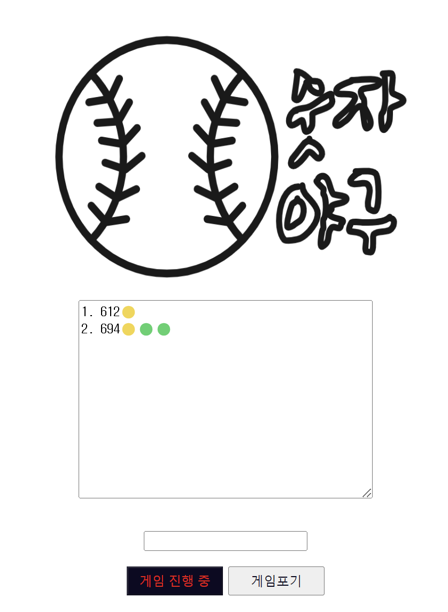
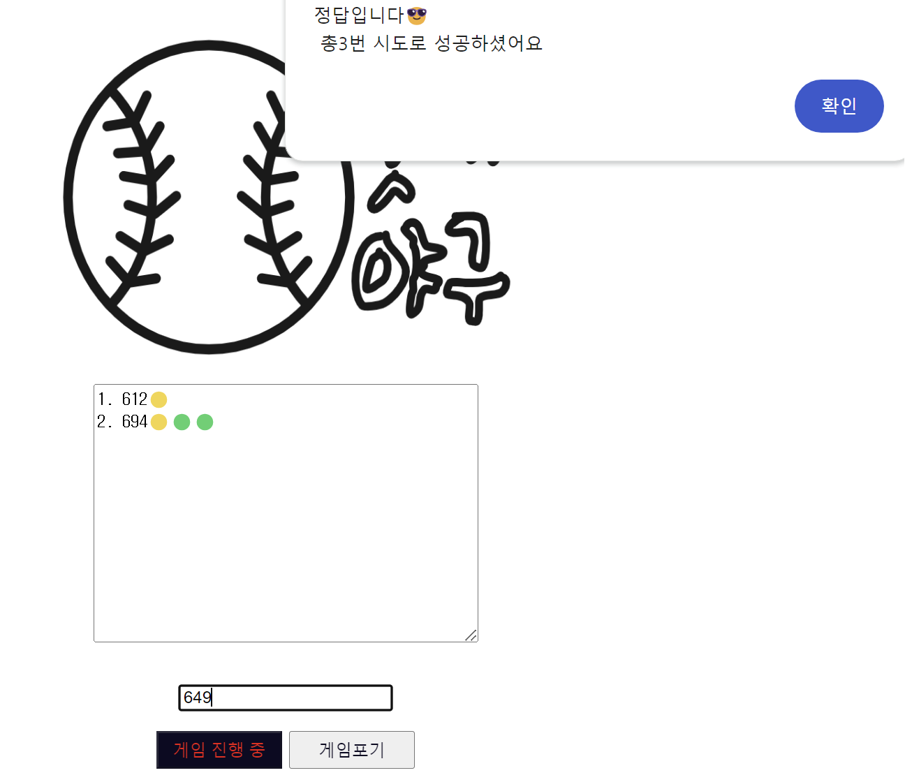

숫자야구 Intro
숫자야구(Bulls and Cows)⚾?
감춰진 3개의 숫자가 무엇인지 맞추는 게임입니다.
1) 3자리 숫자와 위치가 모두 맞아야 성공입니다.
2) 숫자와 자리의 위치가 맞으면 스트라이크(🟡), 숫자만 맞으면 볼(🟢) 입니다.
3) 숫자가 하나도 맞지 않을 경우 아웃(🔴) 으로 표시됩니다.
게임 진행 과정🔥
1. '게임시작'버튼을 클릭하면 게임이 시작됩니다.
2. '정답입력 창'에 유추한 숫자를 입력 후 Enter키를 누릅니다.
3. '결과 창'에 입력한 숫자에 대한 결과값이 출력되게 됩니다.
4. 결과값을 토대로 숫자 유추를 계속 진행하시면 됩니다.^^
게임 예시😊
1.제가 첫 번째 유추한 숫자는 612입니다.
사진과 같이 6,1,2 중 한 자리는 위치와 숫자 모두 같다는 걸 알게 되었습니다.

2. 첫 번째 결과값을 이용해서 두 번째로 유추한 숫자는 694입니다.
이번에는 하나는 위치와 숫자가 모두 맞고, 두개는 자리가 다른가보네요.

3. 최종적으로 제가 유추해낸 답은 649입니다! 정답을 입력하자 정답임을 알려주는 메시지가 뜨네요👏👏
